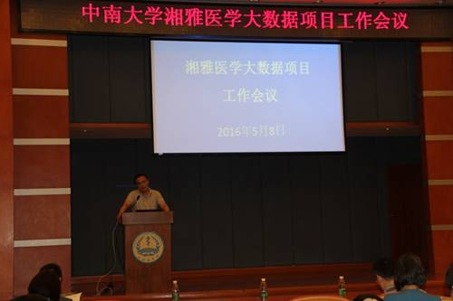

发布时间：2016-05-12来源：未知
5月8日上午，中南大学湘雅医学大数据项目工作会议在湘雅医学院学术报告厅召开。副校长周科朝、张灼华，湘雅医学大数据建设102个项目负责人，各附属医院分管副院长，科学研究部、医院管理处、信息与网络中心、信息安全与大数据研究院、信息科学与工程学院、软件学院等相关部门负责人参加会议。会议由医院管理处处长陈翔主持。
张灼华副校长总结回顾了湘雅医学大数据项目工作开展以来的基本情况。他指出，项目建设的成败是支撑湘雅医学院发展的百年大计，是全体医学工作者的工作责任和共同使命。希望全体参与建设人员提高认识，凝心聚力，为湘雅医学的建设和发展尽心尽力，医学大数据项目的建设目标必将实现。
信息安全与大数据研究院院长李建彬从项目建设历程、顶层设计、一期规划与建设情况、PI项目接入模式以及近期工作安排等五大方面汇报了湘雅医学大数据建设情况。他介绍，研究院将调研和引进湘雅医院、湘雅二医院、湘雅三医院等三家医院临床数据，实现科研项目数据应用的无缝对接，用标准化、科学化的数据支撑湘雅医学大数据项目发展。同时，湘雅医学大数据项目网站也将在6月建成并投入使用，将及时而全面的展现项目最新研究成果。他希望各位同仁共同努力，在基本实现医院数据全面对接、15个PI项目实现接入并逐步支撑全部102个科研项目等近期目标，争取在药物研发、可穿戴智能终端项目等方面有所突破，建成一个大的生态圈。
参会人员围绕医院与大数据平台建设以及医院数据采集，对资金的使用、合作伙伴的选择，如何平衡湘雅各医院之间的数据共享，与信息科数据对接沟通比较等问题分组展开讨论。同时在政策、技术、服务层面上进行深入探讨。
周科朝副校长将医学大数据项目形象比喻为“数理化”模式，“数”代表大数据，“理”代表物理平台，“化”代表技术人员和医务人员的相互沟通协调产生化学反应，取得研究成果。他指出医学大数据项目将会改变每一位医生诊疗和患者就医模式，是一件利国利民，是一件利于我国医学和学校发展的好事，是一件必须做的学校中心工作。他要求信息安全与大数据研究院多与各学院以及医院沟通协调以确保数据采集工作的顺利完成。同时建议将医学大数据项目作为公立医院改革的重要内容之一，以项目研究为契机，促进IT和医务人员的完美结合，实现科学研究和临床应用的有机融合，最终促进湘雅医学大数据项目和学校的健康发展。
会议期间，湘雅三医院副院长袁洪作为15个优秀项目代表介绍了我国高血压临床大数据库建设及应用体系。